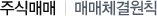

주식교실 ㅣ 주식매매

매매체결의 원칙에는 가격, 시간, 수량 그리고 위탁매매우선의 원칙이 있으며, 개별경쟁매매는(동시호가) 복수가격에 의한 개별경쟁매매(접속매매)로 구분한다.
-
가격우선의 원칙
저가의 매도호가는 고가의 매도호가에 우선한다.
고가의 매수호가는 저가의 매수호가에 우선한다.
-
시간우선의 원칙(접속매매시에 적용)
먼저접수된 호가가 나중에 접수된 호가에 우선한다.
-
수량우선의 원칙
동일가격, 동일시간의 호가간에는 많은 수량의 호가가 적은 수량의 호가에 우선한다.
-
위탁매매 우선의 원칙
동일가격, 동일시간의 호가간에는 위탁매매의 호가가 증권회사의 자기매매 호가에 우선한다. 위탁매매우선의 원칙은 수량우선의 원칙에 우선한다.
- 체결
- 주문을 내신다고 모두 체결이 되지는 않습니다. 사려는 주문의 주문가격으로 파는 사람이 없으면 체결되지 않으며, 반대의 경우도 마찬가지입니다. 또한 체결이 되더라도 주문내신 수량만큼 상대방 수량이 없으면 일부만 체결될 수도 있습니다. 그러므로 주문을 내신 후 시장이 종료되는 오후 3:00 이전에 체결내역을 반드시 확인하시고 원하시는 수량만큼 체결되지 않은 경우에는 정정 혹은 취소 주문을 내십시오.